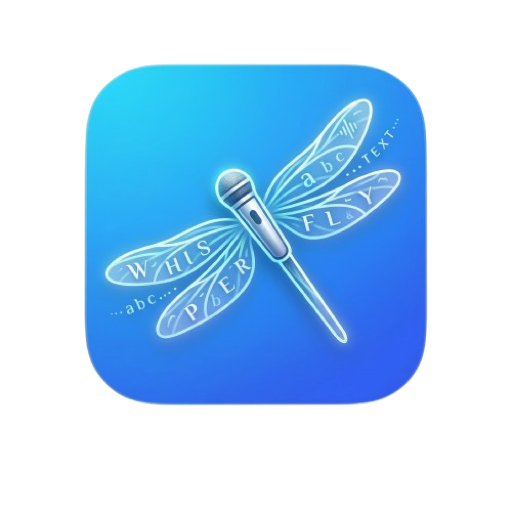

Designed for Liquid Glass.
On macOS 26 the pill, menu, settings and history are made of Liquid Glass, and the cancel and stop buttons merge and split as you record. macOS 13 to 15 get a translucent classic look.

WhisperFly 3.1 for Mac
Hold fn, talk, let go. Clean, punctuated text appears in whatever app you're typing in, powered by free cloud speech recognition.
No model downloads. No GPU. No subscription. Just your voice, turned into clean text in any app on your Mac.
How it works
WhisperFly lives in your menu bar and waits for fn. Mail, Slack, Xcode, a browser tab: wherever the cursor is, that's where the words go.
A floating pill appears next to your caret with a live waveform. Or tap fn once to go hands-free, and tap again to stop.
Talk like you would to a person. Ums, restarts and run-on sentences are fine. Esc cancels from anywhere.
Sounds good, see you at 5.
The audio is transcribed, optionally polished by AI, and typed straight into the focused field. If an app refuses, it lands on your clipboard.
Features
On macOS 26 the pill, menu, settings and history are made of Liquid Glass, and the cancel and stop buttons merge and split as you record. macOS 13 to 15 get a translucent classic look.
Dictate with the mic, or capture whatever is playing on the Mac (a call, a video, a podcast) through ScreenCaptureKit.
HelloПриветHalloこんにちはBonjour你好СәлемHola안녕하세요Ciaoनमस्ते
Drop a recording on the menu. The text goes to your clipboard.
Every dictation is kept with its original and polished text. Search, compare, copy, or save it as a file.
Teach it the names, products and jargon you use, so Kubernetes, Sasha and SwiftUI come out right every time.
Add more than one key and WhisperFly falls back automatically. When an engine fails or hits its limit, the next one takes over, and you can press Retry on anything that slipped through.
A live permission center explains what each grant is for, and stable signing keeps them across updates.
The built-in updater checks that a new version supports your macOS and processor before it touches the installed app.
Read aloud, sound cues, "Always paste" for stubborn apps, silent recordings caught before upload, and Open at login.
AI rewrite
Pick a mode once and every dictation is rewritten on the way in, through Groq, Gemini, OpenRouter or your own server.
You said
um so i think we should uh probably ship the update on friday if the the tests pass you know and then tell sasha
WhisperFly wrote
I think we should probably ship the update on Friday if the tests pass, and then tell Sasha.
Removes filler words and repeats, fixes casing and punctuation, keeps your wording.
Speech engines
One free key covers both transcription and AI rewriting. The welcome guide checks it for you on first launch.
Whisper Large v3 Turbo
Very fast transcription on a free key from console.groq.com.
Gemini 3.5 Transcribe
Called directly with an AI Studio key, with smart formatting built in.
Many models
Route transcription and rewriting through the models you already pay for.
Any server, even whisper.cpp
Point it at a local server and your audio never leaves your Mac.
Audio is sent only to the engine you pick, and only when you record or transcribe a file. Your keys are stored on your Mac.
Free and open source. One download for every Mac from 2017 on.
$ brew tap dandysuper/tap
$ brew install --cask whisperflyRecommended. Update later with brew upgrade --cask whisperfly.
Open it and drag WhisperFly to Applications. If macOS says the app is damaged or blocks it, choose Open Anyway in System Settings → Privacy & Security, or run:
$ xattr -cr /Applications/WhisperFly.app$ git clone https://github.com/dandysuper/WhisperFly.git
$ cd WhisperFly
$ ./scripts/build-app.sh --universal
$ open WhisperFly.appNeeds Xcode 16 or its Command Line Tools. Liquid Glass is compiled in with Xcode 26 or later.